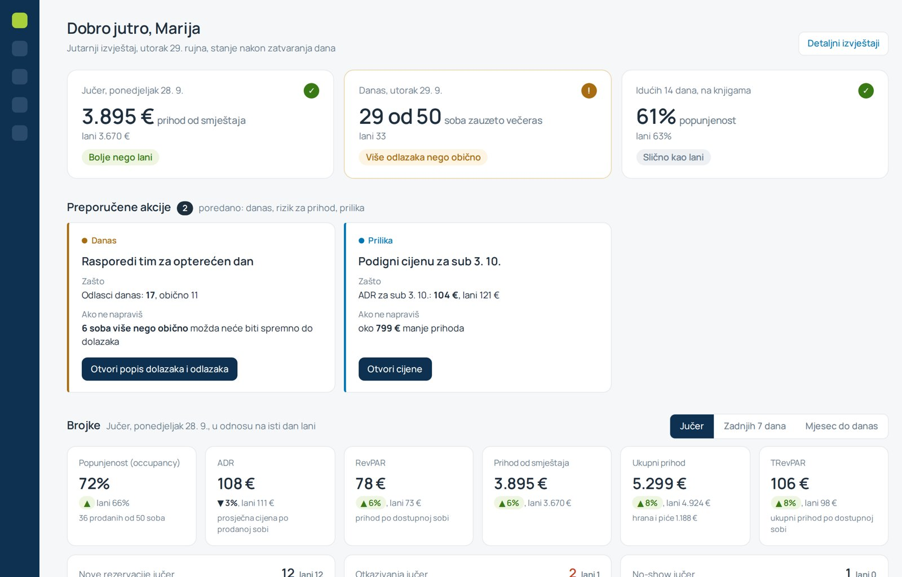

Testni zadatak za Rentlio, product design
Jutarnji izvještaj za hotelske managere
- Dizajn
- Stella Kralj
- Vrijeme rada
- 4 sata

Manageri hotela žale se da su postojeći izvještaji spori i ne daju im sliku koju trebaju za vođenje objekta. Zadatak je revamp izvještaja za managere: razrada (prva pitanja, faze, trade-off i mjerenje) i prototip dashboarda s ključnim informacijama koje manager treba kad ujutro otvori Rentlio.
Pogledala sam javne upute Rentlija da steknem okvirnu sliku, ali stvarne izvještaje i korisnike nisam vidjela. Zato stranica pokazuje kako bih pristupila problemu i koncept rješenja na izmišljenim podacima, a sve što nisam mogla provjeriti označeno je kao pretpostavka.
Što znači "spori"?
Može značiti dvije stvari. Koja je točna, pokazao bi razgovor s managerima. Za ovaj zadatak biram drugu, a iz nje slijedi hipoteza i pretpostavke na kojima gradim rješenje.
Sporo se učitava
Uglavnom posao za developere. Izmjerila bih ga na početku, da imamo s čime usporediti.
Sporo se dolazi do zaključka
Manager predugo traži i tumači brojke. To objašnjava i "ne daju sliku".
Manageru ne fale brojke, nego brz odgovor na tri pitanja: kako smo prošli jučer, kakav je današnji dan i trebam li nešto napraviti za dane koji dolaze.
Pretpostavke na kojima gradim
Dok odgovora nema, hipoteza stoji na ovome.
| Pretpostavka | Odakle dolazi | Kako bih provjerila | Ako nije točna |
|---|---|---|---|
| "Spori" znači sporo do zaključka | Pritužba spominje i da izvještaji "ne daju sliku". | Pitati managere što znači sporo. | Ako je problem učitavanje, prioritet je tehnička optimizacija. |
| Ujutro želi na jednom mjestu vidjeti jučer, danas i što traži akciju | Sliku dana slaže iz više izvora, a stalno ga prekidaju. | Promatranje jutra i sortiranje kartica. | Mijenja se sadržaj i redoslijed prvog ekrana. |
| Žale se manji i srednji hoteli | Jedna osoba radi sve, pa za čitanje izvještaja ima najmanje vremena. | Odgovor podrške na prva pitanja. | Veliki hoteli s revenue managerom trebaju dublju analizu, a ne sažetak. |
| Ujutro na računalu, preko dana na mobitelu | Jutarnji pregled radi se za stolom, a dan provodi u hodu. | Podaci o uređajima. | Mobilni prikaz postaje glavni, a desktop sporedni. |
Plan i prva pitanja
Kako bih radila u stvarnom projektu: od dopune briefa do testa s managerima.
Dopuna briefa
Interna pitanja o onome što fali
Pregled izvještaja
Upoznati alat: koje podatke prikazujemo i čime raspolažemo
Razgovori s managerima
Što gledaju i odlučuju
Koncept i prototip
Iz onoga što se u razgovorima pokaže najvažnijim
Test s managerima
Provjera prototipa prije izrade
Prije razgovora s managerima prvo bih interno skupila ono što mi fali u briefu, da znam od čega krećem:
- Je li dashboard dio revampa izvještaja ili zaseban početni ekran?Osobi koja je dala brief
- Mogu li vidjeti trenutne izvještaje?Osobi koja je dala brief
- Tko se žalio i kojim riječima?Korisničkoj podršci
- Koliko se izvještaji koriste i izvoze?Product analitici
- Koji podaci postoje i koliko su ažurni ujutro?Developerima
- Je li netko već istraživao ovaj problem ili ima planova za izvještaje?Product timu
Prije persone, istraživanje
Pet do šest managera, po 45 minuta, ujutro na radnom mjestu. Cilj je pronaći informacije koje, ako ih manager propusti, stvore stvaran problem.
Manager radi svoje jutro, a ja bilježim što otvara, kojim redom i gdje zapinje.
- Što si jutros prvo pogledao?
- Što, ako propustiš, stvori najveći problem?
- Koju odluku donosiš na temelju jutarnjih brojki?
- Kako znaš je li brojka dobra ili loša?
- Što provjeravaš u drugim alatima ili Excelu?
- Kome i kako javljaš rezultate?
- Na što misliš kad kažeš "sporo"?
Manager slaže kartice s podacima prema tome koliko je loše ako ih propusti i koliko ih često gleda.
Marija i njezino jutro
Proto-persona iz pretpostavki. Na nju se vežu sve odluke na ekranu.
Marija, 41
General manager sezonskog hotela s 50 soba, bez revenue managera
"Treba mi da znam kako stojimo i gdje trebam reagirati."
Ujutro u dvadesetak minuta slaže sliku dana prije dogovora s timom, a stalno je prekidaju. Izvještaji joj kažu što se dogodilo, ali ne i što to znači.
Rješenje joj mora omogućiti da
- u dvije minute zna kako stvari stoje
- na vrijeme vidi problem ili priliku
- zna što napraviti
- vjeruje brojkama
Na prvi pogled želi vidjeti
Ivan, vlasnik malog hotela
Sve radi sam, uglavnom s mobitela. Ako on nešto ne razumije u nekoliko sekundi, rješenje je presloženo.
Analitičar koji treba sve detalje
Za njega ostaju puni izvještaji, zato ne redizajniram sve, nego jutarnji ulaz u njih.
Jutarnji izvještaj koji sam čita brojke
Rješenje ne traži nove podatke. Iste podatke o rezervacijama, prihodima i gostima jednostavna pravila pretvaraju u ocjenu, posljedicu i sljedeći korak. Baza ostaje ista, mijenja se samo prikaz. Odaberi scenarij i prijeđi mišem preko ekrana.
Hijerarhija ekrana
Kako bi developeri pripremili widgete i akcije
Oba reda imaju fiksni predložak, pa se mijenjaju samo brojke. Stanja i akcije računaju se jednom noću, nakon zatvaranja dana, iz rezervacija i istog razdoblja prošle godine. Pragove bih odredila iz povijesnih podataka i relativno, da vrijede i za mali apartman i za veliki hotel.
- Oznaka razdobljajučer, danas ili idućih 14 dana
- Glavna brojka i jedinicaprihod, zauzete sobe ili popunjenost
- Vrijednost od laniuvijek na istom mjestu
- Stanjejedno od unaprijed definiranih, prema pragu: bolje, slično ili slabije nego lani; za danas uobičajen dan ili više dolazaka, odlazaka ili oboje
- Kategorijadanas, rizik za prihod ili prilika
- Akcijašto napraviti, fiksan tekst za svako pravilo, npr. "Pregledaj cijene za idući tjedan"
- Zaštojedna metrika uz usporedbu "lani" ili "obično"
- Ako ne napravišu jednom od dva oblika: oko X € manje prihoda ili X soba više nego obično možda neće biti spremno
- Jedan gumbfiksan tekst i odredište za svako pravilo
- Danas Rasporedi tim kad je neobično puno dolazaka ili odlazaka
- Danas Javi se gostima koji dolaze bez plaćenog depozita
- Rizik za prihod Pregledaj cijene kad idući dani zaostaju za lani
- Rizik za prihod Provjeri otkazane rezervacije kad ih je više nego obično
- Prilika Podigni cijenu kad je datum gotovo pun, a cijena niža nego lani
Koja pravila i s kojim pragovima, odlučila bih nakon razgovora s managerima i developerima.
Kako znam da radi
Uspjeh ne mjerim zadovoljstvom, nego time mijenja li se ono što manager radi: koliko brzo dolazi do zaključka, reagira li na ono što mu izvještaj pokaže i treba li mu još uvijek nešto drugo. Prije izrade bih izmjerila kako je danas, i vrijeme učitavanja i vrijeme do odgovora, da nakon redizajna imam s čime usporediti. Ciljane vrijednosti postavila bih tek kad znam polazno stanje.
Vrijeme do odgovora
Koliko treba manageru da kaže kako stvari stoje i treba li nešto napraviti.
Test s managerima, prije i poslijeReakcija na akcije
Udio preporučenih akcija nakon kojih manager isti dan otvori predloženo mjesto.
Analitika klikova na gumbeManje traženja drugdje
Za dnevnu sliku manageri rjeđe otvaraju druge izvještaje, izvoze ili alate.
Analitika korištenja izvještajaSignali da radi
- Jutarnji izvještaj se otvara svaki dan, prije drugih izvještaja.
- U testu manageri bez pomoći kažu što je dobro, a što ne.
- Na preporučene akcije se reagira.
Signali da ne radi
- Akcije se ignoriraju, pa su pravila preosjetljiva.
- Manageri i dalje prvo otvaraju druge izvještaje ili alate.
- Raste broj pitanja podršci o značenju brojki.
Što ide prvo, a što čeka
MVP koristi samo podatke koji već postoje. Mobilni prikaz i pragovi prilagođeni objektu su u MVP-u, jer bez njih izvještaj ne bi radio za dio korisnika.
Jutarnji izvještaj MVP
- Tri widgeta s ocjenom
- Nekoliko pravila s pragovima prilagođenima objektu
- Brojke u odnosu na lani
- Prognoza na 7, 14 i 30 dana
- Mobilni prikaz
Dolazi k tebi Faza 2
- Email u 7:00
- Dijeljenje s timom
- Obavijest kad se pojavi važna akcija
Svjesno čeka Kasnije
- Manager sam podešava pragove
- AI formulacija i pitanja
- Ostali izvještaji
Trade-off: odgovor ispred tablice
Na prvi pogled manje brojki, ali odmah jasan zaključak. Sve brojke su jedan korak niže.
Ne radim: AI ne odlučuje što je važno
Pravila određuju sadržaj. AI eventualno kasnije pomaže s formulacijom.
Poveznice umjesto akcija
Stavke vode na postojeće dijelove sustava. Ovo je izvještaj, a ne alat za zadatke.